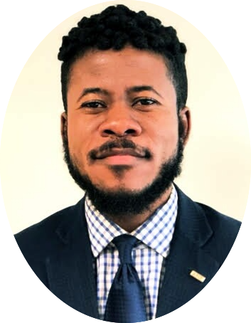

|  | Bruce Boateng YeboahProfessional Web Designer AutobiographyBruce Boateng Yeboah was born to the union of Mr. and Mrs. Nicholas Kumi Yeboah in Tubmanburg, Bomi County. He is the last of eight children -five sisters and two brothers. During his early years, he developed the desire for writing poems and short stories, some of which were read during high school graduation ceremonies. As he embarked upon his middle school educational journey, he received double promotion with the opportunity to skip a class given his performance. However, his dad, who was then a professor, requested that the decision to double promote him be reversed as he would love his son to experience every grade level in his educational journey. While enrolled at Ricks Institute boarding school in Virginia, Liberia, our honoree was elected president of the press club and oversaw the publication and presentation of newsletters and daily news, respectively. He was awarded the Joseph Jenkins Roberts’ merit-based scholarship which is in honor of the first president of Liberia. As a beneficiary of the scholarship, a GPA of 3.5 and above was required to maintain the scholarship. He maintained the scholarship until his graduation from the University of Liberia. He graduated from Ricks Institute as the Valedictorian of the Ambassadors’ Class of 2006 and graduated from the University of Liberia with cum laude in 2011, with a Bachelor of Science degree in Economics. Sadly, he endured many challenges and heartache during these times as in 2005, he experienced the loss of his mother who wasn’t around to witness these accomplishments. With the desire to serve and give back to the community, our honoree, along with his colleagues, established a non-profit organization while enrolled at the University of Liberia called Young People Against Poverty and Crimes, Inc. (YOPAC). This organization impacted the lives of many youths in post-war Liberia, including orphans in the rural parts of Liberia. YOPAC’s programs encompassed the provision of scholarship opportunities, school supplies, workshops and the implementation of a mentorship program which aided in reintegrating gravely traumatized youths in the Liberian society. Following his stay in the US, he also established an extension of that organization here currently known as Youth Against Poverty and Crimes, Inc. which has a 501 (C)(3) tax-exempt status granted by the Internal Revenue Service. The mission of this organization is to address the need for safe and better communities, and to seek the empowerment of youths, women and the elderly through the implementation of various socio-economic programs, with the hope of mitigating poverty and violent crimes in low income communities in and around New York City with an extension in Liberia. His passion to serve and learn still remains as these attributes are an embodiment of his everyday life. |
| Java Development | ⭐️⭐️⭐️⭐️⭐️ |
| iOS Development | ⭐️⭐️⭐️ |
| MS Office Suite | ⭐️⭐️⭐️⭐️ |
| BeHance | ⭐️⭐️⭐️ |
Contact me here